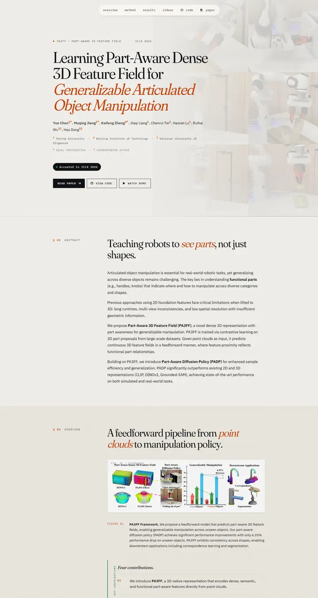

Learning Part-Aware Dense 3D Feature Field for Generalizable Articulated Object Manipulation
温かみのある紙に刷られたデザイン年鑑の見開き。Fraunces の見出し、錆色のイタリック、そしてマストヘッドの背後に淡く漂うロボット。

表示されたページと照合済みです。
選んだ理由
コントラストの強いセリフのディスプレイ書体に錆びたオレンジのイタリックを差し、モノスペースのスモールキャップスのラベルと番号付きのセクション記号（§ 01）を組み合わせたエディトリアルな見た目です。淡くしたロボットの写真がヒーローの背後に置かれ、行長は読みやすく、各セクションは見出しとなる一文から始まります。候補の中で最も個性的で、最も丁寧に作り込まれたページです。
以下の説明と DESIGN.md 本文は英語です。コーディングエージェントが同じ一つの版を読めるよう、翻訳していません。
概要
カラーパレット
タイポグラフィ
Fraunces
Learning Part-Aware Dense 3D Feature Field for Generalizable Articulat
Abstract · Method · Results · BibTeX — 0123456789
IBM Plex Sans
Learning Part-Aware Dense 3D Feature Field for Generalizable Articulat
Abstract · Method · Results · BibTeX — 0123456789
IBM Plex Mono
Learning Part-Aware Dense 3D Feature Field for Generalizable Articulat
Abstract · Method · Results · BibTeX — 0123456789
余白と形
ページの構成要素
ガイドライン
似たスタイル

Scaling Text-Rich Image Understanding via Code-Guided Synthetic Multimodal Data Generation
大学出版局のカタログ。スモールキャップスのセリフ体タイトル、標本を並べたカラーホイール、土の色の棒グラフ。

DICE-BENCH: Evaluating the Tool-Use Capabilities of Large Language Models in Multi-Round, Multi-Party Dialogues
ゲームの箱絵をまとった Nerfies ページ。チャコールのサイコロバナーがアイデンティティを刻み、パステルのブランド色のピルとグレーのカルーセル帯が、静かな2カラムの手法解説へと導く。

TUNA: Comprehensive Fine-grained Temporal Understanding Evaluation on Dense Dynamic Videos
スコアボードから始まるベンチマーク。魚のロゴを添えたスモールキャップスのワードマーク、グラデーションの会議名の行、そしてグレーのヘッダーとゼブラ行、青いモデルリンクを持つ全幅のリーダーボード。

Gesturing Toward Abstraction: Multimodal Convention Formation in Collaborative Physical Tasks
きれいな紙に刷ったゼミの配布資料。大きく柔らかな見出し、6つのチャコールのタブ、そしてブロックを説明する手を描いたティールとマゼンタのコマ漫画。

Making Multimodal LLMs Reliable Chart Data Extractors: A Benchmark and Training Framework
いちばん出来のいいページを開いた実験ノート。モニターのベゼルのように縁取られた動画、見出しには絵文字、どの図も柔らかな影をまとってピン留めされている。

What If Moderation Didn't Mean Suppression? A Case for Personalized Content Transformation
書見台に紫のリボンが掛かった静かな閲覧室。スレート色のサンセリフ見出し、Garamondの本文、そして壁に留められた温かな琥珀色のメモが一枚。